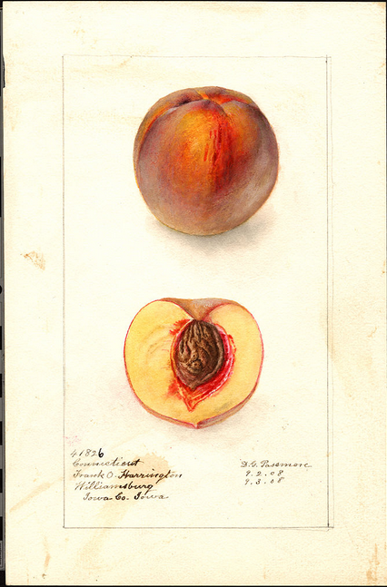

Chapter 2 Dynamic report generation
I had to familiarize myself with a script using dynamic HTML. We used it as a template. This model makes it possible to obtain information on the 10 most common fruits between 1886 and 1942. These most common fruits are:
- apples
- peaches
- pears
- plums
- grapes
- strawberries
- oranges
- cherries
- grapefruits
- avocados
Various parameters can be chosen such as the fruit, the variety and the time interval. It is possible to choose “any” as a fruit. The script will then randomly choose which fruit will be studied. Similarly, if the variety is empty, then the script will choose one randomly.
In the YAML code, at the beginning of the Rmarkdown, the keyword params is used in order to know the parameters. Then, you can assigned all the values that each parameters can take and its default one. This allows the result to be dynamic.
Params:
- fruit:
- value: any
- choices:
- apples
- peaches
The template is presented by Aron Atkins, a software engineer, in a video made during a r-studio conference in 2018. This video can be find it by cliking here. This video is based on a script using the R language. This last one is present on github. You can find the whole project by cliking here.
It uses two json files. The file watercolors.json contains the information about each fruit and the other, the file thumbs.json, contains the image of each fruit based on The USDA Pomological Watercolor Collection which contains thousands of images documenting fruit and nut varieties.
Two dynamic graphics are made from the information that watercolors.json contains. One shows the number of paints using this variety by year and the other one the number of paints done by the painter by year. They are dynamic because it is possible to change the temporal interval of those graphics (so the abscisse). Moreover, if you select a year, it will print the value above the graphic.
All the elements of this result are placed automatically by the Rmarkdown. It means that the text will follow the order of the Rmarkdown. So, why is there a CSS file? How is it possible to put an image and next to it some text?
There is a CSS file, named pomological.css, which have the font-site and avoid the image to overflow. The position of the image is indicated with this HTML command: “div style=”float:left; margin-right: 40px;" which is just above the chunk that download the image from the json. The margin is put in the right because the image will be put on the left of the report. The chunk that download the image from the json corresponds to the one which contains those instructions:
source(“pomological.R”)
thumbnail_url <- find_pomological_thumbnail_url(chosen$id)
knitr::include_graphics(thumbnail_url)
Initially, the image was at the right of the report and the text at the left. I changed it when i was working on it. You can try to change it too in order to have a better comprehension of the whole project.
In order to illustrate this template, it would be interesting to have some visual suppport. This is why I decided to display a watercolor that can appear in a result of the template. You can find it here:

It is the watercolor of a variety of peach named Connecticut which was made in 1908 by Deborah Griscom Passmore. This watercolors was painted in Williamsburg, Iowa County, Iowa, United States. Be careful if you want to use this image, because use of the images in the U.S. Department of Agriculture Pomological Watercolor Collection is not restricted, but a statement of attribution is required. Please use the following attribution statement: “U.S. Department of Agriculture Pomological Watercolor Collection. Rare and Special Collections, National Agricultural Library, Beltsville, MD 20705”
Deborah Griscom Passmore (1840–1911) was a botanical illustrator for the U.S. Department of Agriculture who specialized in paintings of fruit. She made around 1500 watercolors for this Department, which represents a fifth of the total collection. It means about 21 watercolors per year since she was born. If you want to learn more about her and her work, you can click “here”.
As written before, two graphics are drawn in the output of this template. Those from the result of the variety Prunus persica are ploted below. They are dynamic (they are created from the dygraph package) in the html output but cannot be in the pdf or epub output.
This graphic represents the works done by this artist with this variety. As we can see, the painter worked just once with it. This is why the value is always one, there is no evolution about the number of times she painted it. It is printed 0 because the time interval in placed before 1908, year which the watercolor representing the Connecticut variety was made. Below the graphic, there is a temporal cursor which allows to choose the temporal interval. The abscisse axis change according to it. This cursor is borned. Its minimal value is 1886 and its maximal one is 1942. It means that the biggest temporal interval available is 56 years. The study could have been better if this interval could be bigger because this variety existed before 1886 and should have existed after 1942.
The second graphic is about the works with matching fruit/variety. It means that it represents the evolution of the number of watercolors representing a peach from this artist. This is why there is a new curve, a purple one, which is called fruit. Whatever the variety, it counts the number of peaches’ watercolors done during the selected year.
Those two graphics are created within the knit for the HTML version. The two codes used in order to generate them are in the end of this report, in the annexes 3 and 4. For the two other versions, in order to avoid the problem with the dynamic, the results were saved before and then called. We will describe this technique later, in the chapter called “image imported”, just after the one about “image produced within knit”. Those two graphics summarize the impact of this watercolor in the representation of this variety in painting and also the presence of this variety among paints as a peach, so if it is a popular one among artists of this time.
The dynamic is not only present in these graphics. The text of the result is also dynamic. I mean that there is some parts of the sentences that are constants and others no. How is it possible? It is by using some variables defined inside a chunk. Then they are called by using “`r nameVariable”. Of course, it should finish with the symbole used just before the r, but if I do it, the command will be used in this report and you won’t be able to see it.
In this graphic, there is also the possibility to manage the temporal interval, thanks to the dygraphs library. It concludes this chapter. The tables processing will be describe in the next chapter.